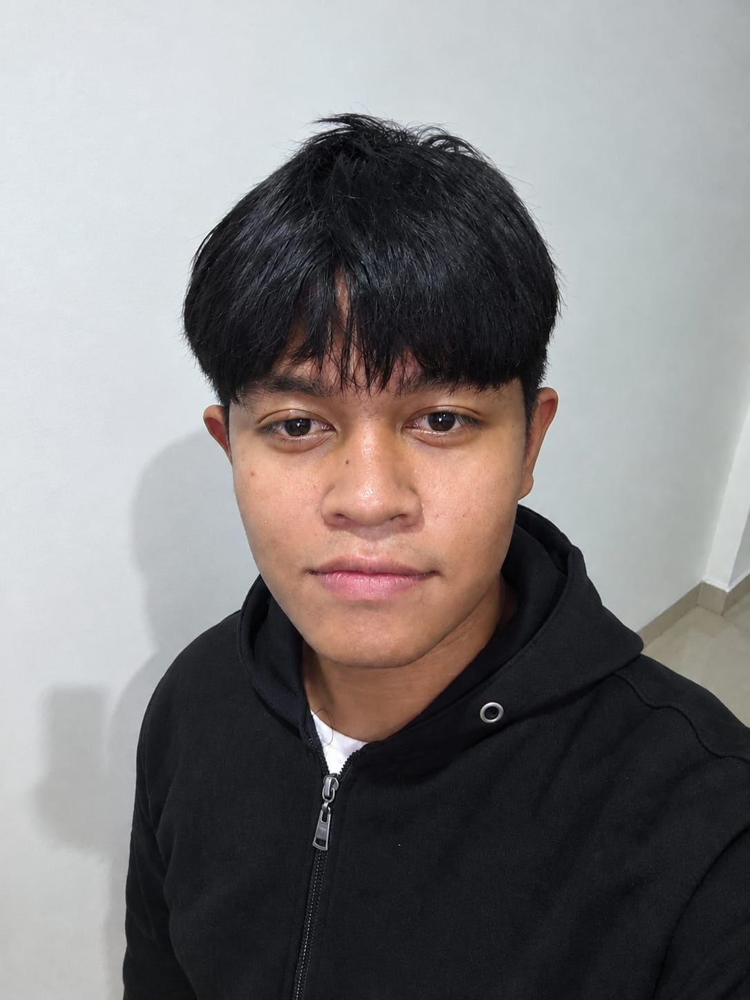

2026 — Sekarang
Google Student Ambassador · Kandidat Batch 2
Mendorong literasi teknologi dan berbagi praktik pengembangan digital di lingkungan kampus.

Curriculum Vitae / 2026
Aspiring AI Engineer · Informatics Student · Product Builder
01 / Profil
Saya mahasiswa Informatika di Institut Teknologi Del yang antusias pada software engineering, UI/UX, dan kecerdasan buatan. Saya senang mengubah masalah yang kompleks menjadi pengalaman digital yang jelas, terukur, dan mudah digunakan.
02 / Pengalaman
2026 — Sekarang
Mendorong literasi teknologi dan berbagi praktik pengembangan digital di lingkungan kampus.
2025 — 2026
Berkolaborasi merancang solusi digital dan mempresentasikan proyek di Telkom University.
2026
Membangun platform warisan budaya digital dan marketplace limbah pertanian sebagai proyek kompetisi.
03 / Portfolio